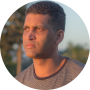

|  | André Luiz de OliveiraVisite minha página no facebookData de nasc.: 03/08/1982 |
Natural de Capelinha-MG, morou na zona rural daquele município,
no distriro de Poço D'anta aproximadamente até os 10 anos de idade, tendo se mudado com a família para o distrito de Chapadinha,
onde estudou até a quarta série do ensino fundamental, sendo sua primeira professora a senhora D. Maria de Jesus na Escola Municipal Ana Lúcia Barbosa.
Quando não estava na escola, sendo filho mais velho, André se revesava entre ajudar seu pai nos trabalhos braçais da roça (preparo da terra, plantio, colheita entre outros) e ajudar sua mãe na casa e no cuidado com os irmãos mais novos.
seu sonho na infância era poder ter uma bicicleta (e quiçá andar de bicicleta no asfalto - rs)
A partir do ano de 1995 mudou-se com seus pais para o distrito de Forquilha, no município de Minas Novas, onde seu pai foi pastorear uma igreja evangélica.
Ali André deu continuidade nos seus estudos, onde ia diariamente com outros colegas de Kombi para a localidade chamada de Ribeirão das Neves, também conhecido como Cruz Mané Chapeú. Ali estudou a quinta série.
No ano seguinte mudou-se novamente com seus familiares para o distrito de Lagoa Grande, ainda no município de Minas Novas, onde estudou a sexta série até metade do ano.
Então seus pais resolveram voltar para Chapadinha. A partir daí, para dar continuidade nos estudos precisava ir diariamente de ônibus para Capelinha, onde estudou até metade da sétima série no ano de 1997.
Foi quando seus pais resolveram mudar-se novamente para a cidade de Nova Serrana (MG). Ali, a partir do mes de maio de 1998 começou a trabalhar "profissionalmete" no modelo CLT (com carteira assinada) - e finalmente conseguiu realizar o "sonho" da infância. Comprou sua primeira bicicleta e pôde então andar de bike no asfalto. 1998 foi também o ano em que assistiu a sua primeira copa do mundo de futebol.
alguns anos mais tarde adquiriu sua primeira moto (uma honda cg 125 verde) e mais tarde comprou seu primeiro carro (um gol g3 vermelho).
Morando em Nova Serrana, André conseguiu concluir o enisno médio no ano de 2002, e infelizmente não conseguiu dar continuidade nos estudos de nível superior. Assim focou sua vida em trabalhar, quase sempre no ramo de comércio (supermercados). Em dezembro de 2005 conheceu Elizeth de Souza Linhares com quem namorou, ficando noivos no ano de 2006 e se casando em 21 de dezembro de 2007.
Em Outubro de 2008, com pretexto de participar de um casamento de um primo em Guarulhos-SP e passar alguns dias naquela cidade, André e Elizeth resolvem então ficar morando em Guarulhos, sempre pagando aluguéis. O seu primeiro trabalho em Guarulhos foi ser entregador de malas extraviadas no Aeroporto de Guarulhos. Enquanto isso, Elizeth começou a frequentar a igreja A.D. (minist. Belém) no bairro Jardim São João, onde o casal se estabeleceu e desde então permanece até os dias atuais (fev/2023) servindo como cooperadores nos trabalhos da igreja.
Em 2009 André entra na empresa Alban (industria plastica), onde ainda permanece trabalhando até os dias atuais (fev/2023).
Neste meio tempo passou por dois procedimentos cirúrgicos, um no abdômen (apendicite) e outro no nariz (desvio de septo).
Em 2010 nasce o primeiro filho do casal, Luiz Gabriel, em 2015 nasce o segundo filho, Lucas Rafael e em 2022 nasce o mais novo, Miguel Henrique.
em 2014 adquiriu o seu veículo VW Voyage preto com o qual permanece até hoje (fev/2023) - está na hora de trocar né rsrs.
André segue lutando para continuar seus estudos. Ingressou em um curso superior de Teologia. Comprou diversos cursos livres na iternet,
alguns dos quais até expirou o prazo, outros ainda estão na fila para serem estudados.
Tem se esforçado para aprimorar o hábito de leitura, incentivando seus filhos a também desenvolverem este hábito.
Neste meio tempo descobriu uma alteração na tireóide e segue fazendo acompanhamentos médicos para controlar sua saúde.
Um hobby o qual André tem gostado bastante é tirar fotografias de pessoas, paisagens e eventos.
É uma pessoa reservada (mais introvertida), de poucos amigos. Gosta mais de ficar em casa, estudando e as vezes jogando algum game.